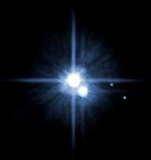

科学最新实验可以证实
佛说生命来自外太空
冯冯
去去来来 / 誊录
──追溯宇宙形成的因果轨迹，一直追循到两百亿年（20 Billion Years）以前，“时间”开始的刹那，就是生命出现之时──
我们宇宙内的各群星云漩系，不断彼此远离，宇宙泡泡不断膨胀，这些也已经由科学家证实了。
我们的超级宇宙大泡泡在大约一千五百亿年以前发生大爆炸，从中心向四方八面辐射，形成无数高能的小泡泡。各个小泡泡各自形成宇宙，每一个宇宙泡泡之内，各自形成无数的星云漩系；每一个星云漩系之内形成亿兆个太阳系，每一个太阳系内形成行星。我们所居住的银河系，是我们宇宙内的星云漩系之一，我们的宇宙是无数的宇宙之一。这些综合各家的理论，已因太空科学的突飞猛进，及许多事实的发现，而获得证实。
超级的宇宙泡泡开始形成，泡内充满了氢气，此时还是极其不稳的气体。它们不停地旋转，渐渐旋转成为许多漩系。由于原子彼此的吸力而收缩，漩系中心收缩的压力比外围的大，温度越来越高，当升到了高达华氏两千万度的临界温度（Critical Temperature），终于爆炸焚烧。这种氢原子浓缩气团的爆炸，是一连串的核子连锁反应，像氢原子爆炸的情形，可是较之更大不知多少倍威力。这时候，气云漩系辐射着高能，发生巨大灿烂的光芒── 一座新的星云漩系诞生了！
核子反应继续进行，燃烧中的一价氢原子形成二价的氦，及转变为碳、氧……及其他元素。整个宇宙的物质元素都是从氢原子形成的。氢原子是一切物质的最初始祖，而氢原子是从虚无形成的，这些在以前的拙文都已详细讨论过了。
较小的红光巨星（像我们的太阳），经过几千万年之后，它的高能燃烧殆尽。由于质量吸引力，它会开始崩溃，并且会更加压缩体积，辐射白光，这是它迸尽最后光热的辐射能，不久就会毁灭。此阶段被称为“白热矮星”（White-hot Dwarf）。它的体质浓缩到很大密度，一汤匙那么多的重量会重达一吨。
当一座星云衰老，它的外围会显得胀大及发射出红光，天文学家称这种红光胀大的老化星云为“红光巨星”（Red Giant）。我们的太阳在六十亿年以后，会老化而变为一座“红光巨星”星云气团。
体积较大的红色巨星星云，会发生巨大的爆炸，光芒骤减，光照宇宙，成为“超级新星云”（Supernova）。它的爆炸把星云碎片辐射到宇宙空间，与宇宙的原始成分结合，形成许多新的小星云。我们的太阳就是银河系爆炸射出的残体，与大宇宙的原体物质结合，所形成的小星云漩系列之一。
我们太阳系内的各行星，是太阳气团旋转飞出的各小气团，分别冷却所形成。各行星，包括我们地球在内，也都是构成于上述大星云的残留气体的原子，与大宇宙的原始气体原子。
我们人类与一切生物的生命，都是由氢、氧、碳、钙……等元素的原子所构成的，它和宇宙各空间各星系的原子完全一样，并无二致！
所以科学家们认为：人类及一切生物的生命，都是源起宇宙外太空的。犹太基督教传统则根据旧约创世纪，而坚称上帝以七天时间开创了世界，第三天用泥土造了人的始祖亚当，第四天造了万物和各种动物，最后从熟睡中的亚当身上，取出一根肋骨，合和泥土，造成女人夏娃。
古代埃及神话说：宇宙是一个长方形盒子，一切星球，一切生命，都在盒子内“自然”出现。
阿含经云：“世界初成，光音天人下来，各有身光，飞行自在，因地肥香美，取食多者，即失神通，体重无光……”
这说得很简单，但是相当明白。用现代科学眼光来看，阿含经所讲的，显然比犹太教创世纪更为合理，埃及古代神话观念也很有一些意思。
阿含经讲的“光音天人”，已经很明白指出是非物质的色界生命，是光波是音波。“世界初成时”，就是指色界的物质世界刚刚形成之时，是宇宙从无色界形成色界之初，是粒子与微中子之类形成及光子聚合之时。“天人”并非物质肉体，而是“光波”与“音波”汇合的智慧生命，他们各有“身光”且“飞行自在”；他们飞到地球，贪恋地球的物质享受，从色界身质降为物质化的欲界肉体生命，从此身体沉重，不能飞行，失去了自由出入宇宙各界的“神足通”。
这里所说的“人”，我认为并非狭义的“人类”之意，我认为是指具有高智慧的有情生。
当代的顶尖科学家们，大多数都屏弃或搁置了旧约的“创世纪”观念，他们多数认为生命的起源是太空，和阿含经的讲法很接近。
让我们详予讨论。首先，再回到科学家们对于宇宙形成和生命构成的发现。上面说过，欲界生命构成的原子，和宇宙太空的游离质点毫无两样。我们实在是宇宙的一部分，我们身体内的原子，远在亿亿兆兆之前，当宇宙初成之时，当虚无形成色界之时，就已经形成了。比我们现在的太阳系还早得多，那时也还未有地球的存在。
我们的太阳系在旋转时，有许多团烈火离心而出，成为一团较小的气体，被太阳巨大的吸力吸住，不停环绕太阳而运行，后来逐渐冷却成为各个星球，其中之一就是我们的地球。
我们的地球逐渐冷却，外壳是坚硬的岩石，核心仍是高热的熔岩热浆。外壳的岩石没有水，没有空气，当然也没有欲界生命的动植物。
从地壳内喷出的气体，有氢气、水气、氮气、沼气（甲烷）……等。火山口上空喷着硫磺烟云，遇到外面的低温，烟云气体化为雨水降下，渐渐注满了地球外壳的低陷之处，成为海洋，那些没有凝成雨水的气体，就汇成包围地球外面的空气层。
过了一段时间，地球内壳的一些辐射性元素，例如铀——这些在银河系初形成时就形成的元素，都是银河中心巨爆后的残余物质——它们有一种令自己分解的特性。它们在地球内壳渐渐分解，放射出辐射能，使内壳的岩石熔化，温度增高，经过七百万年，熔岩渐渐熔穿了地球的外壳，熔岩岩浆喷出了壳外的表层，即是我们熟知的火山爆发，它同时释放了禁锢在石壳下的气体。
空气与雨水河海的形成，具备了欲界生命生存的条件。
雨水冲刷地层分解的矿物质流入海洋中，使海水密度越来越大。这些矿物质有镁、有纳、有钙……以碌化纳为多，形成了海中的盐份咸味，海水浮在地壳上，好象一片蛋壳盛着的水，底下是地壳内层，地心内不断喷出岩浆与气体，很多火山在海底爆发。
天空中由于静电作用与温度的变化，正电与负电作用形成了闪电雷轰，不时闪击地面，闪电引起大气中的氢、甲烷、氨（阿摩尼亚）和水发生奇异的原子结合──形成了氨基酸（Amino Acid）及核酸（Nucleic Acid），这两种分子都是欲界生命所必需的基本构成单元。
这些单细胞原生物比原子复杂，识力也比较强，懂得吞吸海水中的其他化学元素物质及半有机体，及与周围的相类单元发生冲突，互相合并，成为较大的单位；这些单位，经过无数次的合并，形成一个具有适用能力的分子。
这些欲界生命基本结构原始单元，与周围的相类单元发生冲突，互相合并，成为较大的单位；这些单位，经过无数次的合并，形成一个具有适应能力的分子。它们知道选择生存的环境，以维持自己的生命，它们能够自己分裂为二复制自己，这些就是欲界生命的开始。经过不知多少代，它们不断增加繁殖，子子孙孙不计其数。它们就是欲界生命细胞内的核心要素DNA（Deoxyribonucleic Acid），译为“遗传基因核酸”(有直译为“去氧核糖核酸”)。
DNA决定细胞分裂和遗传特性，是目前科学家们所知生物的最基本构成要素。任何动植物的细胞内都有的。
一九六九年九月二十八日，是科学界的一个很重大的日子。那一天，在澳洲墨基逊（Murchison,Australia）小镇，突然从太空响起了一声巨大的爆炸震动，原来是一个太空陨石坠降了！它的爆炸把碎片爆散在广达十四英里的区域。世界各地的科学家们纷纷赶至研究。经过化学分析，发现陨石的黑色碎片是一种含有碳质的软岩，它含有大量含碳的有机复合物（Organic Carbon-bearing Compound），再予以详细复验，发现它含有氨基酸（Amino Acid），这是生命细胞内最基本的构成成分之一。
主持化验的科学家是出生与斯里兰卡岛（Sri Lanka的锡蓝岛）的施劳?庞南浦鲁玛博士（Dr.Cyril Ponnamperuma），这位今年六十四岁的科学家，当时化验分析陨石，发现其中的一块竟含有五种有机化学基本物质，都与地球的生物细胞内的成分相似，这些成分是决定遗传因素的。
这个发现震惊了全世界的科学家。因为本来科学家都认为，只有地球才适合生物生存，甚至于认为地球是宇宙中唯一有生物的星球。现在竟发现来自外太空的陨石含有有机化学物质，而且还是生物细胞内的基本构成成分。这不就是意味着，地球并不是唯一有生物的星球了吗？换言之，就是宇宙其他星系也可能有着有机生命的存在！而且很可能普遍存在于整个宇宙之中！
庞南浦鲁玛博士发现的陨石含有五种有机物质（Cytosine, Adenine ,Guanine,Thymine,Uracil）。这五种成分，是有机生物细胞体内基本的构成遗传决定因子，它们配合着糖与磷所组成的骨干，合而构成遗传基因核酸DNA与RNA核酸，传讯生物细胞的遗传指令。
有些科学家怀疑，陨石坠地后已感染了地面的物质。休士顿大学的生物工程学家约翰?区劳（John Cro）就是怀疑者之一，他说：“没有一块陨石，是不受到感染的。”
但是，庞南浦鲁玛博士和他的助手们发表声明，已经在实验室运用一切最可靠的方法，将陨石清洁消毒，断无感染地面物质。而且，所发现的五种有机化学物质成分，并非由陨石表皮一层所取标本而得，乃是石心的部分取出。 庞博士生于锡兰岛一个教育世家，锡兰岛的佛寺与森林，往往藏有古代从天空落下的陨石。他从小就对于陨石有莫大兴趣。他的家庭是佛教徒，他时常上佛寺去，到森林去，找寻那些陨石；总感到陨石蕴藏着一些宇宙的奥秘。作为一个锡兰岛佛教徒，当然知道阿含经内，佛说光音天人飞来地球的一段，也当然从佛经其他经典知道宇宙是无限的，他一直就想从科学来研究陨石的神秘，希望打开一扇通往宇宙奥秘的大门。
庞南博士起先并非学科学的，他的父母把他送到印度大陆的玛达拉斯大学（Madras University）去念哲学，他获得哲学博士学位。可是他真正的兴趣仍在于宇宙科学及化学，于是他到英国伦敦大学去读化学，从头再来，获得硕士学位；之后在伦敦医院London Hospital的同位素实验所（Isotope Laboratory）任研究员。一九六二年，他转到美国卜奇利市的加州大学分校，追随一九六一年获得诺贝尔化学奖的梅云?卡云博士（Dr.Melvin Calvin曾以阐明植物光合作用而获诺贝尔奖）。
卡云博士其时致力于用人工方法复制地球早期大气情况，及其间的基本有机化学复合成分的实验。这些实验，对于庞博士的启导良多。
庞南浦鲁玛博士学习卡云博士的化学方法，开始从事研究生命的来源。越研究，便越多疑问：宇宙中其他星系或星球，是否也有着有机生命或人类？
施劳·庞南浦鲁玛博士
Dr. Cyril Ponnamperuma analyzing a moon sample
为了进一步研究这些宇宙太空生命是否存在的问题，庞博士于一九六三年参加了美国太空署（NASA）外太空生物学系（Exbiology Divison）的研究工作，成为该系的化学进化分系（Chemistry Evolution）主任。他的工作是研究地球上生物的起源情形，一提供资料给其他科学家参考，作为向外太空找寻有机生命的方向指南。
一九六三年，庞博士以一项化学实验──人工复制地球太初有机化学体的合成──而轰动全世界。他的理论就是：地球太初的有机化学体是源起于火山雷电于海水的结合。即是上文提到的理论──地心内的熔岩喷出地面及喷向空中，所喷出的气体及蒸汽，形成雨水汇聚成海洋。大气中因温度剧边而产生雷电，雷电闪击之下，海水形成氨基酸，及DNA与RNA等遗传核酸，渐而进化成为单细胞生物。
庞博士坚信火山与海洋是生命之母，他用实验来求证。他采用诺贝尔化学奖得主哈劳?邬理（Harold Urey），与史丹利?米勒（Stanley Miller）两位科学家的化学先进技术，在一个玻璃瓶内注满氨气、海水与沼气，然后用高能的电子光束（Electronic Beam）闪击这瓶中的混合物。前者仿制地球太初时代的大气与海洋情况，后者代表宇宙辐射线及雷电闪击地球。闪击了四十五分钟以后，试管内的混合物出现了阿丹耐恩（Adenine）──这是生物细胞核内的遗传基因核酸DAN与RNA的形成质素之一。这个实验的成功发现，证实了上述的生命起源形成理论是正确的，也证明了在宇宙太空中也有欲界生命形成的可能。只要宇宙辐射线，有氨气、甲烷、氢、氧，就有可能形成有机生命的物质，并不仅仅是我们的地球才可能形成欲界有机生命。他的实验轰动了全世界科学家，在次之前，世人认为复制太初生命起源是不可能的。 庞南浦鲁玛博士从实验中获得更大信心，他认为宇宙中到处都有可能形成欲界生命。就算是有些环境极不利于我们地球生物的外太空星球，也各有能够适用该环境的生物，只是生命形态不同而已。
 他说：“整个宇宙中都充满着有机生命，只是各有不同结构，我们必可从太空的星体发现有机生命，最底限度可以找到核酸蛋白质形态的原始生命。”
他认为整个宇宙的化学成分都是一致的。既然地球是太阳系的一部分，太阳系是银河系的一员，银河系是这个宇宙漩系之一，都是这个宇宙泡泡的大爆炸所形成的，没有什么理由说宇宙中的成分不一致。庞博士的理论，我认为很合理，而事实上，天文学家与宇宙学家们，从无线电天文望远镜收到的宇宙各处星云漩系的辐射，经用光谱分析，也早已证实了各皆含有与地球相似的化学元素──氢、氦、氧、氮、碳、重氢……等，都是一样的。
在欧洲，古代希腊哲圣阿里士多德早就于两千多年前提出学说，指出有机生命从无机体形成的。不幸这种科学先见旋即被犹太教基督教的“创世纪”传播所取代。直到公元二十世纪末期，有卡云博士与庞博士的实验，才重光阿里士多德的学说。
庞博士说：“宇宙中化学诸元素的分布大同小异，自然也有可能在各处形成相近的有机体。”
佛教在几千年前就说过欲界从色界而生，比阿里士多德更早指出生命是从物质界形成（请参阅佛说起世因本经）。
庞博士说：“我们并非说可以在实验室内人造复制生命，也不是说用朝露可以立即造成荧火虫。我们只是用实验证明：简单的无机化学元素，可以形成初步的有机化学体；从简单的有机体成分进而可形成氨基酸；氨基酸是欲界生命细胞核内最重要的遗传构成物质。”
庞博士在玛利兰大学的实验室设备周全，包括：生物化学、地理化学、行星大气分析室、月球石清洁室、综合物质光谱分析仪、自动氨基酸分析仪、气体颜色分析器、高能电子撞击器、电子显微镜等等。
庞博士与其师卡云博士的实验成就，都成为“进化论”的有力科学证据。虽然还未能在实验室内复制生物，至少已经证明了，有机生命从无机物质演变而成，也肯定了在宇宙中任何地方都有生命形成的可能。
从无机物质演进为有机生命，正是佛教华严经所说的“先成色界，继成欲界”的程序。华严经的说法，很明显地是基于佛陀所说阿含经。
庞博士现在美国太空暑致力于研究人造合成食物，以适合太空舱内的人员食用。他说：“太空舱内的人员，呼吸时呼出大量的二氧化碳，假如我们将它转变为碳水化合物，就可以制成食物供给太空舱内的飞行员了。既然我们已经能够从无机物制造氨基酸，也许也有希望进一步把二氧化碳气体制成碳水化合物。如果实验成功，或有助于未来制造人造粮食解决世界饥馑。”
一九七零年，庞博士肯定了他所化验的澳洲墨奇逊陨石含有五种氨基酸。一九七七年，他与助手们化验南极洲冰封已二十万年的陨石，再度发现陨石中还有氨基酸，又一次轰动科学界。他继之又发现格陵兰(Green Land)的三十八亿年古老岩石内，有含氢丰富的微生物化石与碳水化合物。
来自佛国锡兰岛的庞博士本着佛教慈悲之情，将他的新研究集中于人工制造粮食。他常常关心世界的粮荒饥馑问题，直到现在于百忙中仍分出时间常常回到锡兰岛去，与斯里兰卡的政府合作发展研究人工制造粮食。现在研究如何使一种遍生在热带海岛的野生豆类增产，来增加粮食，解决穷国的粮荒。这种豆类，当地名“丹不拉”(Dambala)，新几内亚土人称之为“有翅豆”，又称为“穷人豆”。庞博士发现它的豆荚及叶子含有丰富的蛋白质及维他命，根部亦然，种子则含有可食油类。
从研究太空陨石发现氨基酸，转到研究人造粮食来解决世界饥馑，庞博士不愧是一位佛教徒！但愿佛教多出现像他这样伟大的科学家！
从他的实验的成功，对佛说生命从外太空飞来，我们获得了证明。
书名：太空科学核子物理学与佛理的印证
作者：冯冯
出版：天华出版事业股份有限公司